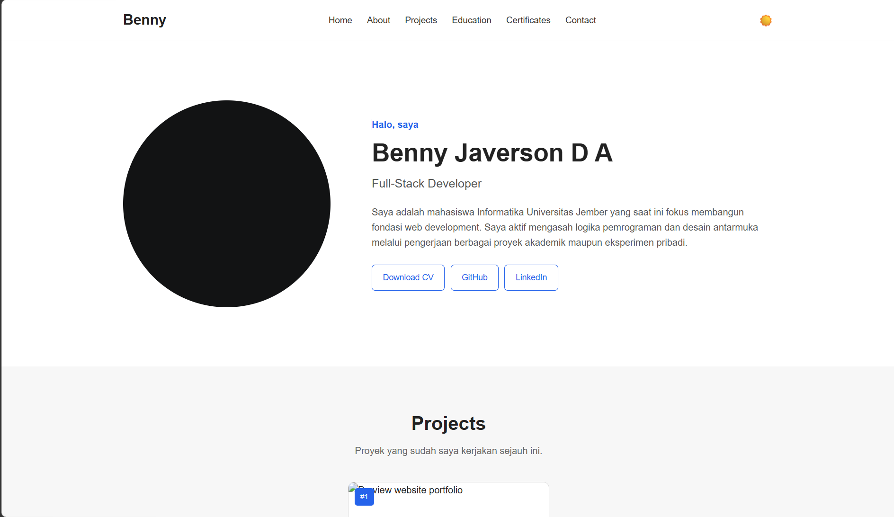

#1Website Portfolio
Website portofolio pribadi yang responsif. Dibuat murni menggunakan HTML, CSS, dan JavaScript (DOM) tanpa framework untuk performa yang ringan dan cepat.
Halo, saya
Full-Stack Developer
Saya adalah mahasiswa Informatika Universitas Jember yang saat ini fokus membangun fondasi web development. Saya aktif mengasah logika pemrograman dan desain antarmuka melalui pengerjaan berbagai proyek akademik maupun eksperimen pribadi.
Proyek yang sudah saya kerjakan sejauh ini.

#1Website portofolio pribadi yang responsif. Dibuat murni menggunakan HTML, CSS, dan JavaScript (DOM) tanpa framework untuk performa yang ringan dan cepat.